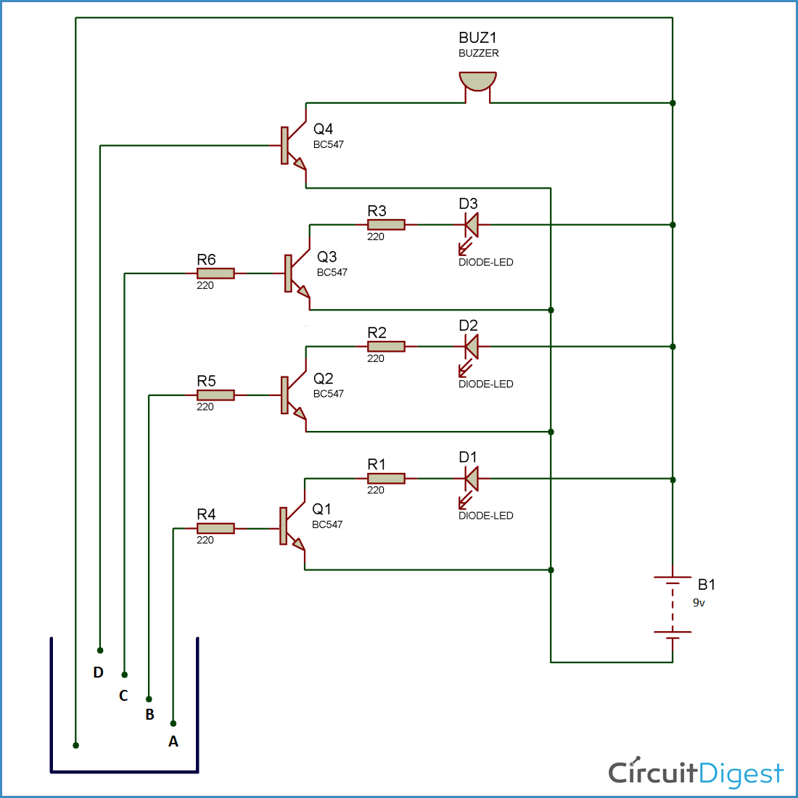

I define myself as a confident, creative person who constantly looks forward for improvisation. To utilize my technical skills for achieving the target and developing the best performance in the organization. I would like to implement my innovative ideas, skills and creativity for accomplishing the projects.
| Qualifiacation | Institute | Year of passing |
|---|---|---|
| B.E (Electronics and Instrumentation Engineering ) | University BDT College of Engineering, Davangere | 2023 |
| II PUC | ST. Aloysius PU College, Harihar | 2019 |
| SSLC | Maria Nivas School, Harihar | 2017 |
- Playing Chess, Badmition
- Pencile Sketch
- Cooking
- Watching Movie
Technical Skills
- Basic C
- Java
- PLC
- Atomation
- Basic Electronics
